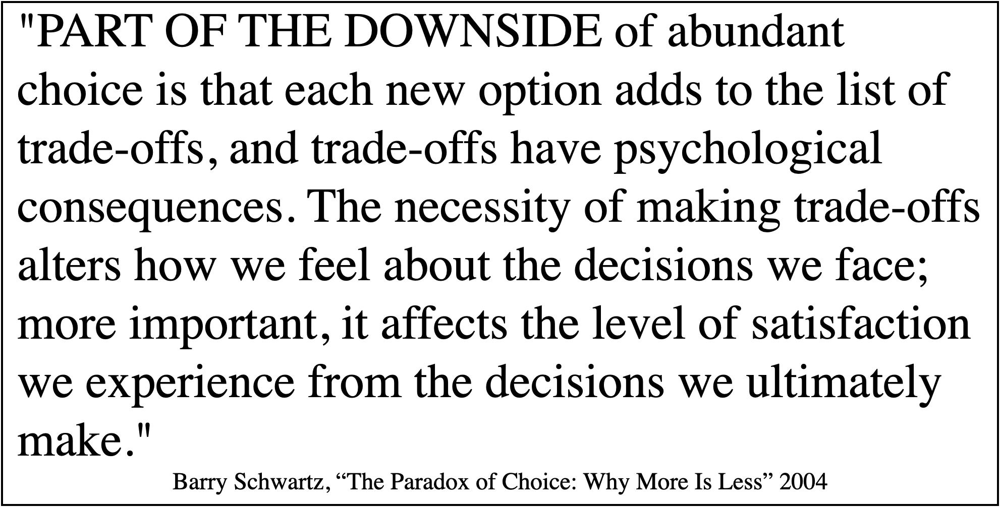
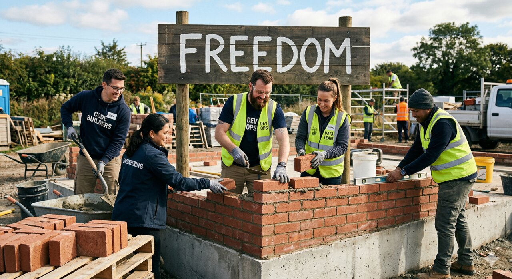

There's a moment every experienced leader has seen — and most have caused. The constraints come off. Maybe it's a new initiative, maybe it's a reorg, maybe it's a well-intentioned executive who's read one too many articles about empowerment. The message lands: we trust our teams to figure out the best way to work. The temperature in the room rises. There's a visceral thrill — cool, freedom. I can finally do things the way I knew were right all along. And then, like clockwork, the drop. But if this screws up, it's all on me — and I'm not sure I know where the lines are. But you can't say that. Asking for boundaries when you've just been handed autonomy looks like you don't trust yourself. So you say nothing. And the failure starts baking before anyone's written a line of code.
That silence is the sound of a leadership failure disguised as a gift. Not because autonomy is wrong — it's essential. But autonomy without structure, without focus, isn't empowerment. It's abandonment with better marketing. And the psychology is predictable — Barry Schwartz called it the paradox of choice — his research was about consumers, but the psychology doesn't care about the org chart. Beyond a threshold, more options don't liberate, they paralyze. The result is anxiety, decision fatigue, and worse outcomes. Not because people can't handle freedom, but because freedom without clarity is a cognitive burden — and the person who handed it to them just called it a gift they're supposed to be grateful for.

Leaders keep making this choice because it's the easiest version of leadership to sell — to their teams, to their boards, to themselves. Removing constraints diffuses accountability in ways that feel generous. If the initiative stalls, it wasn't a leadership failure — the teams just need more time, more resources, more alignment. The language of empowerment provides infinite cover. And it comes in shiny packaging — every keynote, every management book published in the last decade, every breathless case study about how Netflix or Spotify or whoever's turn it is this quarter got out of the way and let brilliant people do brilliant things. What those case studies always skip is what was already in place before the constraints came off. Nobody removes guardrails from a system that never had them — the question is whether the structural work that made autonomy viable gets told as part of the story, or whether it's just not as interesting as the freedom narrative. Rosso found exactly this when studying R&D teams — the relationship between constraints and creative output isn't linear, it's an inverted U. Too few constraints and creativity drops. Too many and it drops. The peak is in the middle — enough structure to focus the work, enough room to move within it. The Netflix story isn't about the absence of constraints. It's about constraints so well-built they became invisible.
This pattern has always been expensive. But with AI, the cost function changes. When you remove constraints from a traditional software initiative, the failure mode is slow — missed deadlines, scope creep, teams building the same thing twice. There's time to course-correct. Someone notices. Usually someone who's been around long enough to feel it before they can name it — the quiet fixer who knows which handoffs break and intervenes before anyone's called a meeting. That person was never a constraint. But they were doing the work that constraints were supposed to do, absorbing the cognitive load that unclear roles create — every ambiguous boundary, every undefined handoff burning mental energy that should have gone toward the actual work. And nobody wrote it down. With AI, the failure mode is fast and confident. An unconstrained team doesn't just wander — it builds something that produces convincing output, gets integrated into a workflow, and starts shaping decisions before anyone's asked whether it should. And the institutional knowledge that used to catch those mistakes? It was never in the documentation. It was never in the system. Which means it was never in the training data you just spent tens of thousands feeding to your shiny new ML tool. The damage isn't that nothing happened. It's that something happened, it looked like progress, and by the time anyone realized the ground underneath it was rotten, the organization had already built on top of it.
This is where AI adoption either works or doesn't. Not at the model layer. Not at the infrastructure layer. At the layer where a person looks at a new tool and either knows exactly what problem they're solving with it, or starts experimenting in every direction because nobody worked with them to determine which direction matters. Unconstrained teams don't adopt AI. They play with it. I've watched this pattern in dozens of teams and heard about it from hundreds — and it ends the same way almost every time. Six months later, someone asks what the ROI was and nobody can point to anything that stuck. Thomke's research on innovation for HBR showed that experimentation succeeds when it has focus, clear hypotheses, and metrics — without those, it produces noise — the kind that sounds like music if you're not in the room and paying attention, the same way AI hallucinations sound like insight until someone with vision actually looks.
So if removing constraints is abdication, what's the alternative? It's not the opposite — not top-down mandates, not prescribed workflows, not a leader in a room deciding how everyone else should work. That's just a different kind of failure, and most organizations have the scar tissue to prove it.
The alternative is the harder thing. It's sitting down with the people who do the work and building the boundaries together. What are we trying to accomplish — specifically, not aspirationally? Who owns what, by name, not by team? Where does my responsibility end and yours begin, and what happens in the gap? What does good output look like, and who's accountable when it doesn't? These aren't constraints you impose. They're constraints you build — in deep conversation with the people who'll live inside them, on the terms that matter to each of them. Amy Edmondson's foundational work on psychological safety — later confirmed at scale by Google's Project Aristotle — found that this combination is what actually drives performance. Safety alone gives you a team that's comfortable but directionless. Structure alone gives you a team that performs but doesn't adapt. You need both — and you build both the same way: in honest conversation, not top-down decree.
When it works — when the constraints are built right, with the right people, in the right conversations — you can see it land. Shoulders drop. Not in defeat — in relief. Not because someone told them what to do, but because someone finally told them where the edges are. I don't have to do everything. I don't have to know everything. I understand where to spend my time, and it's my sweet spot. I can do this — for real, not just in the quarterly review that no one looks at. I can make a difference and know what that difference is.
That's not the sound of someone being constrained. That's the sound of someone being freed.
And this is where good intentions do the most damage. A leader who's only ever imposed constraints watches the structure land and sees resignation. A leader who's never built constraints at all sees shoulders drop and reads it as the weight of bureaucracy landing. But a leader who sat in the room and built those boundaries with their team — who had the hard conversations about focus, ownership, and where the lines are — sees what's actually happening. Relief. The relief of someone who finally knows where to aim.
The hardest thing about constraints isn't designing them. It's believing they're what your people actually want — and need — because everything in the leadership zeitgeist is telling you otherwise. But the organizations that get AI adoption right are unlikely to be the ones that gave their teams the most freedom. They'll be the ones that gave their teams the most clarity. And clarity, it turns out, is something you have to build — brick by brick, layer by layer, with enough time for the mortar to set before you build on top of it.

If you're a CTO who just got an AI budget approved, this is the conversation you need to have before the first dollar converts to anything. Not about which models to deploy or which vendor to choose — about whether your teams know what they're solving, who owns what, and where the edges are. Because the board is going to ask what they got for their investment. And right now, the answer to that question is being shaped less by your technology choices than by whether anyone did the structural work to make those choices matter.
The question is what that work looks like in practice. That's next.